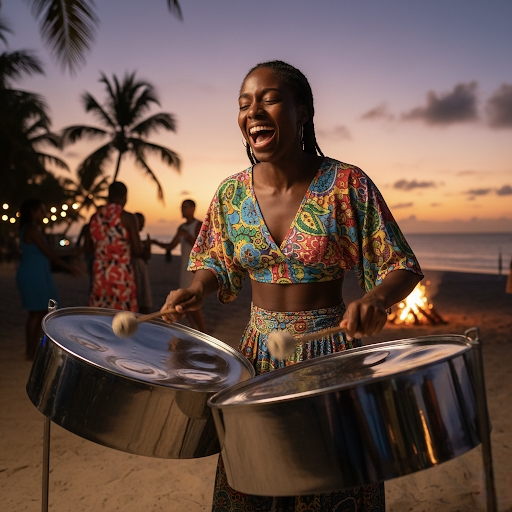

Music & Arts
Trinidad is the birthplace of the steelpan - the only acoustic instrument invented in the 20th century...
Trinidad is the birthplace of the steelpan - the only acoustic instrument invented in the 20th century. Born from African rhythms and creativity, our ancestors took discarded oil drums and created music. Calypso tells our stories with wit and social commentary, while Soca makes you move whether you want to or not. These aren't just genres - they're the soundtrack of our lives. From pan yards practicing for Panorama to sound systems pumping at fetes, music is how we celebrate, protest, and connect. It's in our DNA.